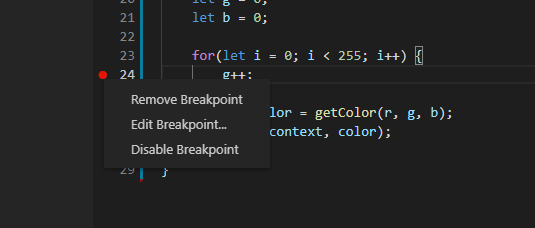
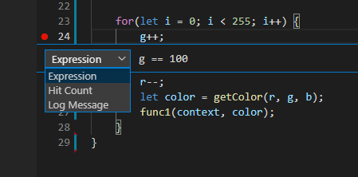

Conditional Statements
With breakpoints, you can also set them to stop your program on certain conditions.
If you right click on a breakpoint you've made, you can edit the breakpoint as well as remove it or enable/disable it.
When you are editing a breakpoint, you can set it to Expression which will make the breakpoint only stop the program if the condition you set is met at the breakpoint. Make sure you hit Enter after setting your expression to save the breakpoint conditional. You can also hit Esc to cancel.
Box (Exercise): Conditional Statements
Below is a canvas with a green square just like the last page, but if you look at 3-1.js, you will see that
there is a for loop that keeps drawing a different colored square. Lets set a breakpoint
on line 24 and run the debugger.
Nothing should appear when on the canvas at the breakpoint. If we keep continuing, We will first see a reddish square that slowly changes colors.
Now edit that breakpoint and go to Expression. Set it to g == 100.
This will make it so that the breakpoint only stops the program when g == 100. Restart the page and you
should see a brownish square when the debugger pauses then. If we continue, it should jump to
the end and we'll get the green square again.
Remember to refresh the page if you are already on it
You can also try this with other expressions. Anything you can write in an if statements you can write in the Expression. Also try using other values such as the r value or the i value.
Summary
We have the power to set the breakpoints to only activate when we want them to. This can save us a lot of time when we only want the program to stop when a specific value is reached.
Next: Tracking Values